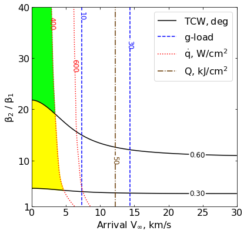
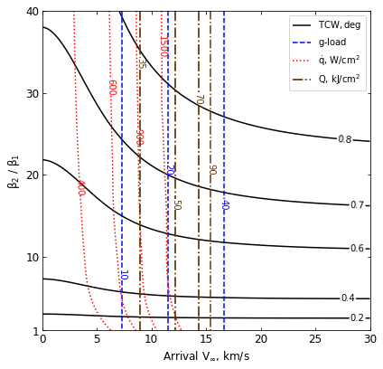

03 - b - Venus - Feasibility Charts - Drag¶
[1]:
from AMAT.planet import Planet
from AMAT.vehicle import Vehicle
import numpy as np
from scipy import interpolate
import matplotlib.pyplot as plt
from matplotlib import rcParams
from matplotlib.patches import Polygon
import os
[2]:
# Create a planet object
planet=Planet("VENUS")
planet.h_skip = 150000.0
# Load an nominal atmospheric profile with height, temp, pressure, density data
planet.loadAtmosphereModel('../atmdata/Venus/venus-gram-avg.dat', 0 , 1 ,2, 3)
vinf_kms_array = np.linspace( 0.0, 30.0, 11)
betaRatio_array = np.linspace( 1.0, 41.0 , 11)
[3]:
beta1 = 20.0
runID = 'venus-drag-'
[4]:
v0_kms_array = np.zeros(len(vinf_kms_array))
v0_kms_array[:] = np.sqrt(1.0*(vinf_kms_array[:]*1E3)**2.0 + 2*np.ones(len(vinf_kms_array))*planet.GM/(planet.RP+150.0*1.0E3))/1.0E3
overShootLimit_array = np.zeros((len(v0_kms_array),len(betaRatio_array)))
underShootLimit_array = np.zeros((len(v0_kms_array),len(betaRatio_array)))
exitflag_os_array = np.zeros((len(v0_kms_array),len(betaRatio_array)))
exitflag_us_array = np.zeros((len(v0_kms_array),len(betaRatio_array)))
TCW_array = np.zeros((len(v0_kms_array),len(betaRatio_array)))
[5]:
for i in range(0,len(v0_kms_array)):
for j in range(0,len(betaRatio_array)):
vehicle=Vehicle('DMVehicle', 150.0, beta1, 0.0, 3.1416, 0.0, 0.10, planet)
vehicle.setInitialState(150.0,0.0,0.0,v0_kms_array[i],0.0,-4.5,0.0,0.0)
vehicle.setSolverParams(1E-6)
vehicle.setDragModulationVehicleParams(beta1,betaRatio_array[j])
underShootLimit_array[i,j], exitflag_us_array[i,j] = vehicle.findUnderShootLimitD(2400.0, 2.0, -80.0,-4.0,1E-10,400.0)
overShootLimit_array[i,j] , exitflag_os_array[i,j] = vehicle.findOverShootLimitD (2400.0, 2.0, -80.0,-4.0,1E-10,400.0)
TCW_array[i,j] = overShootLimit_array[i,j] - underShootLimit_array[i,j]
print('VINF: '+str(vinf_kms_array[i])+' km/s, BETA RATIO: '+str(betaRatio_array[j])+' TCW: '+str(TCW_array[i,j])+' deg.')
VINF: 0.0 km/s, BETA RATIO: 1.0 TCW: 0.0 deg.
VINF: 0.0 km/s, BETA RATIO: 5.0 TCW: 0.3220487156722811 deg.
VINF: 0.0 km/s, BETA RATIO: 9.0 TCW: 0.4360231767168443 deg.
VINF: 0.0 km/s, BETA RATIO: 13.0 TCW: 0.5050491497822804 deg.
VINF: 0.0 km/s, BETA RATIO: 17.0 TCW: 0.5544410763759515 deg.
VINF: 0.0 km/s, BETA RATIO: 21.0 TCW: 0.5929213868803345 deg.
VINF: 0.0 km/s, BETA RATIO: 25.0 TCW: 0.624551638844423 deg.
VINF: 0.0 km/s, BETA RATIO: 29.0 TCW: 0.6513828848219418 deg.
VINF: 0.0 km/s, BETA RATIO: 33.0 TCW: 0.6746144367825764 deg.
VINF: 0.0 km/s, BETA RATIO: 37.0 TCW: 0.6951445745362435 deg.
VINF: 0.0 km/s, BETA RATIO: 41.0 TCW: 0.7136652860062895 deg.
VINF: 3.0 km/s, BETA RATIO: 1.0 TCW: 0.0 deg.
VINF: 3.0 km/s, BETA RATIO: 5.0 TCW: 0.33448939238951425 deg.
VINF: 3.0 km/s, BETA RATIO: 9.0 TCW: 0.45154499992349884 deg.
VINF: 3.0 km/s, BETA RATIO: 13.0 TCW: 0.52252868594951 deg.
VINF: 3.0 km/s, BETA RATIO: 17.0 TCW: 0.5733744004428445 deg.
VINF: 3.0 km/s, BETA RATIO: 21.0 TCW: 0.613180774023931 deg.
VINF: 3.0 km/s, BETA RATIO: 25.0 TCW: 0.6459131981973769 deg.
VINF: 3.0 km/s, BETA RATIO: 29.0 TCW: 0.6735819152963813 deg.
VINF: 3.0 km/s, BETA RATIO: 33.0 TCW: 0.6977037931064842 deg.
VINF: 3.0 km/s, BETA RATIO: 37.0 TCW: 0.7191636001698498 deg.
VINF: 3.0 km/s, BETA RATIO: 41.0 TCW: 0.7383850382611854 deg.
VINF: 6.0 km/s, BETA RATIO: 1.0 TCW: 0.0 deg.
VINF: 6.0 km/s, BETA RATIO: 5.0 TCW: 0.3580002305097878 deg.
VINF: 6.0 km/s, BETA RATIO: 9.0 TCW: 0.4812206557580794 deg.
VINF: 6.0 km/s, BETA RATIO: 13.0 TCW: 0.556252373757161 deg.
VINF: 6.0 km/s, BETA RATIO: 17.0 TCW: 0.6105959658088977 deg.
VINF: 6.0 km/s, BETA RATIO: 21.0 TCW: 0.6530580049839045 deg.
VINF: 6.0 km/s, BETA RATIO: 25.0 TCW: 0.6881958231424505 deg.
VINF: 6.0 km/s, BETA RATIO: 29.0 TCW: 0.718152691002615 deg.
VINF: 6.0 km/s, BETA RATIO: 33.0 TCW: 0.7441408322411007 deg.
VINF: 6.0 km/s, BETA RATIO: 37.0 TCW: 0.7671760931734752 deg.
VINF: 6.0 km/s, BETA RATIO: 41.0 TCW: 0.7879856008621573 deg.
VINF: 9.0 km/s, BETA RATIO: 1.0 TCW: 0.0 deg.
VINF: 9.0 km/s, BETA RATIO: 5.0 TCW: 0.3772896297159605 deg.
VINF: 9.0 km/s, BETA RATIO: 9.0 TCW: 0.5063778333278606 deg.
VINF: 9.0 km/s, BETA RATIO: 13.0 TCW: 0.5858658559591277 deg.
VINF: 9.0 km/s, BETA RATIO: 17.0 TCW: 0.6434872302379517 deg.
VINF: 9.0 km/s, BETA RATIO: 21.0 TCW: 0.6890528016920143 deg.
VINF: 9.0 km/s, BETA RATIO: 25.0 TCW: 0.7265180246977252 deg.
VINF: 9.0 km/s, BETA RATIO: 29.0 TCW: 0.758583690814703 deg.
VINF: 9.0 km/s, BETA RATIO: 33.0 TCW: 0.7867172720143571 deg.
VINF: 9.0 km/s, BETA RATIO: 37.0 TCW: 0.8116541298149968 deg.
VINF: 9.0 km/s, BETA RATIO: 41.0 TCW: 0.8340138711828331 deg.
VINF: 12.0 km/s, BETA RATIO: 1.0 TCW: 0.0 deg.
VINF: 12.0 km/s, BETA RATIO: 5.0 TCW: 0.3898246071621543 deg.
VINF: 12.0 km/s, BETA RATIO: 9.0 TCW: 0.5236000178301765 deg.
VINF: 12.0 km/s, BETA RATIO: 13.0 TCW: 0.6063985622022301 deg.
VINF: 12.0 km/s, BETA RATIO: 17.0 TCW: 0.6669922432738531 deg.
VINF: 12.0 km/s, BETA RATIO: 21.0 TCW: 0.7146549761564529 deg.
VINF: 12.0 km/s, BETA RATIO: 25.0 TCW: 0.7544087833848607 deg.
VINF: 12.0 km/s, BETA RATIO: 29.0 TCW: 0.78831841209103 deg.
VINF: 12.0 km/s, BETA RATIO: 33.0 TCW: 0.8178446480451385 deg.
VINF: 12.0 km/s, BETA RATIO: 37.0 TCW: 0.844135520314012 deg.
VINF: 12.0 km/s, BETA RATIO: 41.0 TCW: 0.8678376888819912 deg.
VINF: 15.0 km/s, BETA RATIO: 1.0 TCW: 0.0 deg.
VINF: 15.0 km/s, BETA RATIO: 5.0 TCW: 0.39703856886262656 deg.
VINF: 15.0 km/s, BETA RATIO: 9.0 TCW: 0.534245170023496 deg.
VINF: 15.0 km/s, BETA RATIO: 13.0 TCW: 0.6199022482142027 deg.
VINF: 15.0 km/s, BETA RATIO: 17.0 TCW: 0.6823507958761184 deg.
VINF: 15.0 km/s, BETA RATIO: 21.0 TCW: 0.7321065111646021 deg.
VINF: 15.0 km/s, BETA RATIO: 25.0 TCW: 0.773214327331516 deg.
VINF: 15.0 km/s, BETA RATIO: 29.0 TCW: 0.8083453980470949 deg.
VINF: 15.0 km/s, BETA RATIO: 33.0 TCW: 0.839128087482095 deg.
VINF: 15.0 km/s, BETA RATIO: 37.0 TCW: 0.8663851460696605 deg.
VINF: 15.0 km/s, BETA RATIO: 41.0 TCW: 0.8908180307007569 deg.
VINF: 18.0 km/s, BETA RATIO: 1.0 TCW: 0.0 deg.
VINF: 18.0 km/s, BETA RATIO: 5.0 TCW: 0.4013324275802006 deg.
VINF: 18.0 km/s, BETA RATIO: 9.0 TCW: 0.5411323633124994 deg.
VINF: 18.0 km/s, BETA RATIO: 13.0 TCW: 0.6285823104444717 deg.
VINF: 18.0 km/s, BETA RATIO: 17.0 TCW: 0.6928973295216565 deg.
VINF: 18.0 km/s, BETA RATIO: 21.0 TCW: 0.743794581907423 deg.
VINF: 18.0 km/s, BETA RATIO: 25.0 TCW: 0.7859747729307855 deg.
VINF: 18.0 km/s, BETA RATIO: 29.0 TCW: 0.822123291232856 deg.
VINF: 18.0 km/s, BETA RATIO: 33.0 TCW: 0.8535590643296018 deg.
VINF: 18.0 km/s, BETA RATIO: 37.0 TCW: 0.8814328026528528 deg.
VINF: 18.0 km/s, BETA RATIO: 41.0 TCW: 0.9066491902667622 deg.
VINF: 21.0 km/s, BETA RATIO: 1.0 TCW: 0.0 deg.
VINF: 21.0 km/s, BETA RATIO: 5.0 TCW: 0.40412424841269967 deg.
VINF: 21.0 km/s, BETA RATIO: 9.0 TCW: 0.5458656127484574 deg.
VINF: 21.0 km/s, BETA RATIO: 13.0 TCW: 0.6346664896591392 deg.
VINF: 21.0 km/s, BETA RATIO: 17.0 TCW: 0.7002286565839313 deg.
VINF: 21.0 km/s, BETA RATIO: 21.0 TCW: 0.7519900699444406 deg.
VINF: 21.0 km/s, BETA RATIO: 25.0 TCW: 0.7950573533089482 deg.
VINF: 21.0 km/s, BETA RATIO: 29.0 TCW: 0.8317136177138309 deg.
VINF: 21.0 km/s, BETA RATIO: 33.0 TCW: 0.8636980889714323 deg.
VINF: 21.0 km/s, BETA RATIO: 37.0 TCW: 0.8922895205032546 deg.
VINF: 21.0 km/s, BETA RATIO: 41.0 TCW: 0.9181071371713188 deg.
VINF: 24.0 km/s, BETA RATIO: 1.0 TCW: 0.0 deg.
VINF: 24.0 km/s, BETA RATIO: 5.0 TCW: 0.4058116584637901 deg.
VINF: 24.0 km/s, BETA RATIO: 9.0 TCW: 0.5489694304997101 deg.
VINF: 24.0 km/s, BETA RATIO: 13.0 TCW: 0.6390470551305043 deg.
VINF: 24.0 km/s, BETA RATIO: 17.0 TCW: 0.7053265066169843 deg.
VINF: 24.0 km/s, BETA RATIO: 21.0 TCW: 0.7579121252820187 deg.
VINF: 24.0 km/s, BETA RATIO: 25.0 TCW: 0.8014501010111417 deg.
VINF: 24.0 km/s, BETA RATIO: 29.0 TCW: 0.8385376555670518 deg.
VINF: 24.0 km/s, BETA RATIO: 33.0 TCW: 0.8711386303693871 deg.
VINF: 24.0 km/s, BETA RATIO: 37.0 TCW: 0.9002302855005837 deg.
VINF: 24.0 km/s, BETA RATIO: 41.0 TCW: 0.926330997965124 deg.
VINF: 27.0 km/s, BETA RATIO: 1.0 TCW: 0.0 deg.
VINF: 27.0 km/s, BETA RATIO: 5.0 TCW: 0.4067509408596379 deg.
VINF: 27.0 km/s, BETA RATIO: 9.0 TCW: 0.5510207468905719 deg.
VINF: 27.0 km/s, BETA RATIO: 13.0 TCW: 0.6421535832087102 deg.
VINF: 27.0 km/s, BETA RATIO: 17.0 TCW: 0.7090269092113886 deg.
VINF: 27.0 km/s, BETA RATIO: 21.0 TCW: 0.7621909648441942 deg.
VINF: 27.0 km/s, BETA RATIO: 25.0 TCW: 0.8060289593413472 deg.
VINF: 27.0 km/s, BETA RATIO: 29.0 TCW: 0.8436339399268036 deg.
VINF: 27.0 km/s, BETA RATIO: 33.0 TCW: 0.8767015366611304 deg.
VINF: 27.0 km/s, BETA RATIO: 37.0 TCW: 0.9060254678006459 deg.
VINF: 27.0 km/s, BETA RATIO: 41.0 TCW: 0.9323515953328751 deg.
VINF: 30.0 km/s, BETA RATIO: 1.0 TCW: 0.0 deg.
VINF: 30.0 km/s, BETA RATIO: 5.0 TCW: 0.40728485771251144 deg.
VINF: 30.0 km/s, BETA RATIO: 9.0 TCW: 0.552464346128545 deg.
VINF: 30.0 km/s, BETA RATIO: 13.0 TCW: 0.6443651475165098 deg.
VINF: 30.0 km/s, BETA RATIO: 17.0 TCW: 0.7118162972401478 deg.
VINF: 30.0 km/s, BETA RATIO: 21.0 TCW: 0.7652969532209681 deg.
VINF: 30.0 km/s, BETA RATIO: 25.0 TCW: 0.8094866791179811 deg.
VINF: 30.0 km/s, BETA RATIO: 29.0 TCW: 0.8475611084322736 deg.
VINF: 30.0 km/s, BETA RATIO: 33.0 TCW: 0.880873686830455 deg.
VINF: 30.0 km/s, BETA RATIO: 37.0 TCW: 0.910358182809432 deg.
VINF: 30.0 km/s, BETA RATIO: 41.0 TCW: 0.9369682290998753 deg.
---------------------------------------------------------------------------
FileNotFoundError Traceback (most recent call last)
C:\Users\ATHULG~1\AppData\Local\Temp/ipykernel_10832/1229809988.py in <module>
13 print('VINF: '+str(vinf_kms_array[i])+' km/s, BETA RATIO: '+str(betaRatio_array[j])+' TCW: '+str(TCW_array[i,j])+' deg.')
14
---> 15 np.savetxt('../data/jsr-paper/venus/'+runID+'vinf_kms_array.txt',vinf_kms_array)
16 np.savetxt('../data/jsr-paper/venus/'+runID+'v0_kms_array.txt',v0_kms_array)
17 np.savetxt('../data/jsr-paper/venus/'+runID+'betaRatio_array.txt',betaRatio_array)
<__array_function__ internals> in savetxt(*args, **kwargs)
~\anaconda3\envs\env1\lib\site-packages\numpy\lib\npyio.py in savetxt(fname, X, fmt, delimiter, newline, header, footer, comments, encoding)
1366 if _is_string_like(fname):
1367 # datasource doesn't support creating a new file ...
-> 1368 open(fname, 'wt').close()
1369 fh = np.lib._datasource.open(fname, 'wt', encoding=encoding)
1370 own_fh = True
FileNotFoundError: [Errno 2] No such file or directory: '../data/jsr-paper/venus/venus-drag-vinf_kms_array.txt'
[6]:
np.savetxt('../data/jsr-paper/venus/'+runID+'vinf_kms_array.txt',vinf_kms_array)
np.savetxt('../data/jsr-paper/venus/'+runID+'v0_kms_array.txt',v0_kms_array)
np.savetxt('../data/jsr-paper/venus/'+runID+'betaRatio_array.txt',betaRatio_array)
np.savetxt('../data/jsr-paper/venus/'+runID+'overShootLimit_array.txt',overShootLimit_array)
np.savetxt('../data/jsr-paper/venus/'+runID+'exitflag_os_array.txt',exitflag_os_array)
np.savetxt('../data/jsr-paper/venus/'+runID+'underShootLimit_array.txt',underShootLimit_array)
np.savetxt('../data/jsr-paper/venus/'+runID+'exitflag_us_array.txt',exitflag_us_array)
np.savetxt('../data/jsr-paper/venus/'+runID+'TCW_array.txt',TCW_array)
[7]:
acc_net_g_max_array = np.zeros((len(v0_kms_array),len(betaRatio_array)))
stag_pres_atm_max_array = np.zeros((len(v0_kms_array),len(betaRatio_array)))
q_stag_total_max_array = np.zeros((len(v0_kms_array),len(betaRatio_array)))
heatload_max_array = np.zeros((len(v0_kms_array),len(betaRatio_array)))
for i in range(0,len(v0_kms_array)):
for j in range(0,len(betaRatio_array)):
vehicle=Vehicle('DMVehicle', 150.0, beta1, 0.0, 3.1416, 0.0, 0.10, planet)
vehicle.setInitialState(150.0,0.0,0.0,v0_kms_array[i],0.0,overShootLimit_array[i,j],0.0,0.0)
vehicle.setSolverParams(1E-6)
vehicle.propogateEntry (2400.0, 2.0, 0.0)
# Extract and save variables to plot
t_min_os = vehicle.t_minc
h_km_os = vehicle.h_kmc
acc_net_g_os = vehicle.acc_net_g
q_stag_con_os = vehicle.q_stag_con
q_stag_rad_os = vehicle.q_stag_rad
rc_os = vehicle.rc
vc_os = vehicle.vc
stag_pres_atm_os = vehicle.computeStagPres(rc_os,vc_os)/(1.01325E5)
heatload_os = vehicle.heatload
vehicle=Vehicle('DMVehicle', 150.0, beta1, 0.0, 3.1416, 0.0, 0.10, planet)
vehicle.setInitialState(150.0,0.0,0.0,v0_kms_array[i],0.0,underShootLimit_array[i,j],0.0,0.0)
vehicle.setSolverParams( 1E-6)
vehicle.propogateEntry (2400.0, 2.0, 0.0)
# Extract and save variable to plot
t_min_us = vehicle.t_minc
h_km_us = vehicle.h_kmc
acc_net_g_us = vehicle.acc_net_g
q_stag_con_us = vehicle.q_stag_con
q_stag_rad_us = vehicle.q_stag_rad
rc_us = vehicle.rc
vc_us = vehicle.vc
stag_pres_atm_us = vehicle.computeStagPres(rc_us,vc_us)/(1.01325E5)
heatload_us = vehicle.heatload
q_stag_total_os = q_stag_con_os + q_stag_rad_os
q_stag_total_us = q_stag_con_us + q_stag_rad_us
acc_net_g_max_array[i,j] = max(max(acc_net_g_os),max(acc_net_g_os))
stag_pres_atm_max_array[i,j] = max(max(stag_pres_atm_os),max(stag_pres_atm_os))
q_stag_total_max_array[i,j] = max(max(q_stag_total_os),max(q_stag_total_us))
heatload_max_array[i,j] = max(max(heatload_os),max(heatload_os))
print("V_infty: "+str(vinf_kms_array[i])+" km/s"+", BR: "+str(betaRatio_array[j])+" G_MAX: "+str(acc_net_g_max_array[i,j])+" QDOT_MAX: "+str(q_stag_total_max_array[i,j])+" J_MAX: "+str(heatload_max_array[i,j])+" STAG. PRES: "+str(stag_pres_atm_max_array[i,j]))
np.savetxt('../data/jsr-paper/venus/'+runID+'acc_net_g_max_array.txt',acc_net_g_max_array)
np.savetxt('../data/jsr-paper/venus/'+runID+'stag_pres_atm_max_array.txt',stag_pres_atm_max_array)
np.savetxt('../data/jsr-paper/venus/'+runID+'q_stag_total_max_array.txt',q_stag_total_max_array)
np.savetxt('../data/jsr-paper/venus/'+runID+'heatload_max_array.txt',heatload_max_array)
V_infty: 0.0 km/s, BR: 1.0 G_MAX: 4.079933711425297 QDOT_MAX: 210.15540016622728 J_MAX: 20159.71585018567 STAG. PRES: 0.007903249111098437
V_infty: 0.0 km/s, BR: 5.0 G_MAX: 4.079933711425297 QDOT_MAX: 288.1440813823153 J_MAX: 20159.71585018567 STAG. PRES: 0.007903249111098437
V_infty: 0.0 km/s, BR: 9.0 G_MAX: 4.079933711425297 QDOT_MAX: 308.77637501406474 J_MAX: 20159.71585018567 STAG. PRES: 0.007903249111098437
V_infty: 0.0 km/s, BR: 13.0 G_MAX: 4.079933711425297 QDOT_MAX: 320.067971743084 J_MAX: 20159.71585018567 STAG. PRES: 0.007903249111098437
V_infty: 0.0 km/s, BR: 17.0 G_MAX: 4.079933711425297 QDOT_MAX: 327.4760819731964 J_MAX: 20159.71585018567 STAG. PRES: 0.007903249111098437
V_infty: 0.0 km/s, BR: 21.0 G_MAX: 4.079933711425297 QDOT_MAX: 333.1709284905636 J_MAX: 20159.71585018567 STAG. PRES: 0.007903249111098437
V_infty: 0.0 km/s, BR: 25.0 G_MAX: 4.079933711425297 QDOT_MAX: 337.530917272917 J_MAX: 20159.71585018567 STAG. PRES: 0.007903249111098437
V_infty: 0.0 km/s, BR: 29.0 G_MAX: 4.079933711425297 QDOT_MAX: 341.5607276307379 J_MAX: 20159.71585018567 STAG. PRES: 0.007903249111098437
V_infty: 0.0 km/s, BR: 33.0 G_MAX: 4.079933711425297 QDOT_MAX: 344.4455614814381 J_MAX: 20159.71585018567 STAG. PRES: 0.007903249111098437
V_infty: 0.0 km/s, BR: 37.0 G_MAX: 4.079933711425297 QDOT_MAX: 346.84051186349967 J_MAX: 20159.71585018567 STAG. PRES: 0.007903249111098437
V_infty: 0.0 km/s, BR: 41.0 G_MAX: 4.079933711425297 QDOT_MAX: 349.7379043576154 J_MAX: 20159.71585018567 STAG. PRES: 0.007903249111098437
V_infty: 3.0 km/s, BR: 1.0 G_MAX: 5.025610446074188 QDOT_MAX: 250.20995021976228 J_MAX: 21902.61493841687 STAG. PRES: 0.009734754932408517
V_infty: 3.0 km/s, BR: 5.0 G_MAX: 5.025610446074188 QDOT_MAX: 336.4811070047486 J_MAX: 21902.61493841687 STAG. PRES: 0.009734754932408517
V_infty: 3.0 km/s, BR: 9.0 G_MAX: 5.025610446074188 QDOT_MAX: 359.4235116510287 J_MAX: 21902.61493841687 STAG. PRES: 0.009734754932408517
V_infty: 3.0 km/s, BR: 13.0 G_MAX: 5.025610446074188 QDOT_MAX: 372.1392403662959 J_MAX: 21902.61493841687 STAG. PRES: 0.009734754932408517
V_infty: 3.0 km/s, BR: 17.0 G_MAX: 5.025610446074188 QDOT_MAX: 380.7389787886308 J_MAX: 21902.61493841687 STAG. PRES: 0.009734754932408517
V_infty: 3.0 km/s, BR: 21.0 G_MAX: 5.025610446074188 QDOT_MAX: 386.8122764068473 J_MAX: 21902.61493841687 STAG. PRES: 0.009734754932408517
V_infty: 3.0 km/s, BR: 25.0 G_MAX: 5.025610446074188 QDOT_MAX: 391.97228899727725 J_MAX: 21902.61493841687 STAG. PRES: 0.009734754932408517
V_infty: 3.0 km/s, BR: 29.0 G_MAX: 5.025610446074188 QDOT_MAX: 396.5050817360267 J_MAX: 21902.61493841687 STAG. PRES: 0.009734754932408517
V_infty: 3.0 km/s, BR: 33.0 G_MAX: 5.025610446074188 QDOT_MAX: 399.83163679001274 J_MAX: 21902.61493841687 STAG. PRES: 0.009734754932408517
V_infty: 3.0 km/s, BR: 37.0 G_MAX: 5.025610446074188 QDOT_MAX: 402.31355196909607 J_MAX: 21902.61493841687 STAG. PRES: 0.009734754932408517
V_infty: 3.0 km/s, BR: 41.0 G_MAX: 5.025610446074188 QDOT_MAX: 405.61721964077003 J_MAX: 21902.61493841687 STAG. PRES: 0.009734754932408517
V_infty: 6.0 km/s, BR: 1.0 G_MAX: 7.97373485778177 QDOT_MAX: 382.5802363951919 J_MAX: 26905.16871833225 STAG. PRES: 0.015443962875130626
V_infty: 6.0 km/s, BR: 5.0 G_MAX: 7.97373485778177 QDOT_MAX: 496.02141803960336 J_MAX: 26905.16871833225 STAG. PRES: 0.015443962875130626
V_infty: 6.0 km/s, BR: 9.0 G_MAX: 7.97373485778177 QDOT_MAX: 526.9531085335202 J_MAX: 26905.16871833225 STAG. PRES: 0.015443962875130626
V_infty: 6.0 km/s, BR: 13.0 G_MAX: 7.97373485778177 QDOT_MAX: 543.3416950894589 J_MAX: 26905.16871833225 STAG. PRES: 0.015443962875130626
V_infty: 6.0 km/s, BR: 17.0 G_MAX: 7.97373485778177 QDOT_MAX: 555.2673780963012 J_MAX: 26905.16871833225 STAG. PRES: 0.015443962875130626
V_infty: 6.0 km/s, BR: 21.0 G_MAX: 7.97373485778177 QDOT_MAX: 562.8137912253599 J_MAX: 26905.16871833225 STAG. PRES: 0.015443962875130626
V_infty: 6.0 km/s, BR: 25.0 G_MAX: 7.97373485778177 QDOT_MAX: 571.2217782856342 J_MAX: 26905.16871833225 STAG. PRES: 0.015443962875130626
V_infty: 6.0 km/s, BR: 29.0 G_MAX: 7.97373485778177 QDOT_MAX: 577.2872871853583 J_MAX: 26905.16871833225 STAG. PRES: 0.015443962875130626
V_infty: 6.0 km/s, BR: 33.0 G_MAX: 7.97373485778177 QDOT_MAX: 581.7560045296493 J_MAX: 26905.16871833225 STAG. PRES: 0.015443962875130626
V_infty: 6.0 km/s, BR: 37.0 G_MAX: 7.97373485778177 QDOT_MAX: 585.033861835524 J_MAX: 26905.16871833225 STAG. PRES: 0.015443962875130626
V_infty: 6.0 km/s, BR: 41.0 G_MAX: 7.97373485778177 QDOT_MAX: 589.3594609969176 J_MAX: 26905.16871833225 STAG. PRES: 0.015443962875130626
V_infty: 9.0 km/s, BR: 1.0 G_MAX: 13.386654133413735 QDOT_MAX: 652.7249804859102 J_MAX: 35108.12674158933 STAG. PRES: 0.025924909831524724
V_infty: 9.0 km/s, BR: 5.0 G_MAX: 13.386654133413735 QDOT_MAX: 827.3245738865578 J_MAX: 35108.12674158933 STAG. PRES: 0.025924909831524724
V_infty: 9.0 km/s, BR: 9.0 G_MAX: 13.386654133413735 QDOT_MAX: 875.0266965933577 J_MAX: 35108.12674158933 STAG. PRES: 0.025924909831524724
V_infty: 9.0 km/s, BR: 13.0 G_MAX: 13.386654133413735 QDOT_MAX: 901.030422208378 J_MAX: 35108.12674158933 STAG. PRES: 0.025924909831524724
V_infty: 9.0 km/s, BR: 17.0 G_MAX: 13.386654133413735 QDOT_MAX: 921.2573121363456 J_MAX: 35108.12674158933 STAG. PRES: 0.025924909831524724
V_infty: 9.0 km/s, BR: 21.0 G_MAX: 13.386654133413735 QDOT_MAX: 933.2855908308965 J_MAX: 35108.12674158933 STAG. PRES: 0.025924909831524724
V_infty: 9.0 km/s, BR: 25.0 G_MAX: 13.386654133413735 QDOT_MAX: 943.3354831260473 J_MAX: 35108.12674158933 STAG. PRES: 0.025924909831524724
V_infty: 9.0 km/s, BR: 29.0 G_MAX: 13.386654133413735 QDOT_MAX: 955.8448810936629 J_MAX: 35108.12674158933 STAG. PRES: 0.025924909831524724
V_infty: 9.0 km/s, BR: 33.0 G_MAX: 13.386654133413735 QDOT_MAX: 965.4992958422808 J_MAX: 35108.12674158933 STAG. PRES: 0.025924909831524724
V_infty: 9.0 km/s, BR: 37.0 G_MAX: 13.386654133413735 QDOT_MAX: 973.1527502375828 J_MAX: 35108.12674158933 STAG. PRES: 0.025924909831524724
V_infty: 9.0 km/s, BR: 41.0 G_MAX: 13.386654133413735 QDOT_MAX: 979.0622867839135 J_MAX: 35108.12674158933 STAG. PRES: 0.025924909831524724
V_infty: 12.0 km/s, BR: 1.0 G_MAX: 21.555068565022047 QDOT_MAX: 1258.4895949371473 J_MAX: 48794.44798241518 STAG. PRES: 0.04173968838855454
V_infty: 12.0 km/s, BR: 5.0 G_MAX: 21.555068565022047 QDOT_MAX: 1591.404047777673 J_MAX: 48794.44798241518 STAG. PRES: 0.04173968838855454
V_infty: 12.0 km/s, BR: 9.0 G_MAX: 21.555068565022047 QDOT_MAX: 1697.683562422389 J_MAX: 48794.44798241518 STAG. PRES: 0.04173968838855454
V_infty: 12.0 km/s, BR: 13.0 G_MAX: 21.555068565022047 QDOT_MAX: 1738.6891246802827 J_MAX: 48794.44798241518 STAG. PRES: 0.04173968838855454
V_infty: 12.0 km/s, BR: 17.0 G_MAX: 21.555068565022047 QDOT_MAX: 1794.5363979622412 J_MAX: 48794.44798241518 STAG. PRES: 0.04173968838855454
V_infty: 12.0 km/s, BR: 21.0 G_MAX: 21.555068565022047 QDOT_MAX: 1828.162353759557 J_MAX: 48794.44798241518 STAG. PRES: 0.04173968838855454
V_infty: 12.0 km/s, BR: 25.0 G_MAX: 21.555068565022047 QDOT_MAX: 1849.1963222067714 J_MAX: 48794.44798241518 STAG. PRES: 0.04173968838855454
V_infty: 12.0 km/s, BR: 29.0 G_MAX: 21.555068565022047 QDOT_MAX: 1862.5603445482325 J_MAX: 48794.44798241518 STAG. PRES: 0.04173968838855454
V_infty: 12.0 km/s, BR: 33.0 G_MAX: 21.555068565022047 QDOT_MAX: 1870.3122877310752 J_MAX: 48794.44798241518 STAG. PRES: 0.04173968838855454
V_infty: 12.0 km/s, BR: 37.0 G_MAX: 21.555068565022047 QDOT_MAX: 1892.628908785056 J_MAX: 48794.44798241518 STAG. PRES: 0.04173968838855454
V_infty: 12.0 km/s, BR: 41.0 G_MAX: 21.555068565022047 QDOT_MAX: 1914.5255585566151 J_MAX: 48794.44798241518 STAG. PRES: 0.04173968838855454
V_infty: 15.0 km/s, BR: 1.0 G_MAX: 32.79075671066294 QDOT_MAX: 3353.3541429280986 J_MAX: 81831.83529242544 STAG. PRES: 0.06349220243847555
V_infty: 15.0 km/s, BR: 5.0 G_MAX: 32.79075671066294 QDOT_MAX: 4454.23437215139 J_MAX: 81831.83529242544 STAG. PRES: 0.06349220243847555
V_infty: 15.0 km/s, BR: 9.0 G_MAX: 32.79075671066294 QDOT_MAX: 4754.0884039144985 J_MAX: 81831.83529242544 STAG. PRES: 0.06349220243847555
V_infty: 15.0 km/s, BR: 13.0 G_MAX: 32.79075671066294 QDOT_MAX: 5012.830822037524 J_MAX: 81831.83529242544 STAG. PRES: 0.06349220243847555
V_infty: 15.0 km/s, BR: 17.0 G_MAX: 32.79075671066294 QDOT_MAX: 5131.1493919812865 J_MAX: 81831.83529242544 STAG. PRES: 0.06349220243847555
V_infty: 15.0 km/s, BR: 21.0 G_MAX: 32.79075671066294 QDOT_MAX: 5176.069135619316 J_MAX: 81831.83529242544 STAG. PRES: 0.06349220243847555
V_infty: 15.0 km/s, BR: 25.0 G_MAX: 32.79075671066294 QDOT_MAX: 5221.963762267268 J_MAX: 81831.83529242544 STAG. PRES: 0.06349220243847555
V_infty: 15.0 km/s, BR: 29.0 G_MAX: 32.79075671066294 QDOT_MAX: 5361.4176913424035 J_MAX: 81831.83529242544 STAG. PRES: 0.06349220243847555
V_infty: 15.0 km/s, BR: 33.0 G_MAX: 32.79075671066294 QDOT_MAX: 5473.371236579431 J_MAX: 81831.83529242544 STAG. PRES: 0.06349220243847555
V_infty: 15.0 km/s, BR: 37.0 G_MAX: 32.79075671066294 QDOT_MAX: 5560.972787734056 J_MAX: 81831.83529242544 STAG. PRES: 0.06349220243847555
V_infty: 15.0 km/s, BR: 41.0 G_MAX: 32.79075671066294 QDOT_MAX: 5631.267168536889 J_MAX: 81831.83529242544 STAG. PRES: 0.06349220243847555
V_infty: 18.0 km/s, BR: 1.0 G_MAX: 47.06452982212281 QDOT_MAX: 13371.51277115226 J_MAX: 199527.9800637704 STAG. PRES: 0.09112539017012208
V_infty: 18.0 km/s, BR: 5.0 G_MAX: 47.06452982212281 QDOT_MAX: 18027.733322715612 J_MAX: 199527.9800637704 STAG. PRES: 0.09112539017012208
V_infty: 18.0 km/s, BR: 9.0 G_MAX: 47.06452982212281 QDOT_MAX: 20018.419227369435 J_MAX: 199527.9800637704 STAG. PRES: 0.09112539017012208
V_infty: 18.0 km/s, BR: 13.0 G_MAX: 47.06452982212281 QDOT_MAX: 20554.980667084088 J_MAX: 199527.9800637704 STAG. PRES: 0.09112539017012208
V_infty: 18.0 km/s, BR: 17.0 G_MAX: 47.06452982212281 QDOT_MAX: 20774.84945371802 J_MAX: 199527.9800637704 STAG. PRES: 0.09112539017012208
V_infty: 18.0 km/s, BR: 21.0 G_MAX: 47.06452982212281 QDOT_MAX: 21785.550188278678 J_MAX: 199527.9800637704 STAG. PRES: 0.09112539017012208
V_infty: 18.0 km/s, BR: 25.0 G_MAX: 47.06452982212281 QDOT_MAX: 22534.50171314886 J_MAX: 199527.9800637704 STAG. PRES: 0.09112539017012208
V_infty: 18.0 km/s, BR: 29.0 G_MAX: 47.06452982212281 QDOT_MAX: 23097.41965651847 J_MAX: 199527.9800637704 STAG. PRES: 0.09112539017012208
V_infty: 18.0 km/s, BR: 33.0 G_MAX: 47.06452982212281 QDOT_MAX: 23516.45574368189 J_MAX: 199527.9800637704 STAG. PRES: 0.09112539017012208
V_infty: 18.0 km/s, BR: 37.0 G_MAX: 47.06452982212281 QDOT_MAX: 23822.128625968344 J_MAX: 199527.9800637704 STAG. PRES: 0.09112539017012208
V_infty: 18.0 km/s, BR: 41.0 G_MAX: 47.06452982212281 QDOT_MAX: 24045.77019027592 J_MAX: 199527.9800637704 STAG. PRES: 0.09112539017012208
V_infty: 21.0 km/s, BR: 1.0 G_MAX: 64.56999216167664 QDOT_MAX: 61388.02822911545 J_MAX: 663462.2137964192 STAG. PRES: 0.12501127954441718
V_infty: 21.0 km/s, BR: 5.0 G_MAX: 64.56999216167664 QDOT_MAX: 81614.9261061023 J_MAX: 663462.2137964192 STAG. PRES: 0.12501127954441718
V_infty: 21.0 km/s, BR: 9.0 G_MAX: 64.56999216167664 QDOT_MAX: 92253.96809473021 J_MAX: 663462.2137964192 STAG. PRES: 0.12501127954441718
V_infty: 21.0 km/s, BR: 13.0 G_MAX: 64.56999216167664 QDOT_MAX: 97848.55568913884 J_MAX: 663462.2137964192 STAG. PRES: 0.12501127954441718
V_infty: 21.0 km/s, BR: 17.0 G_MAX: 64.56999216167664 QDOT_MAX: 100150.2578856062 J_MAX: 663462.2137964192 STAG. PRES: 0.12501127954441718
V_infty: 21.0 km/s, BR: 21.0 G_MAX: 64.56999216167664 QDOT_MAX: 100691.24731110172 J_MAX: 663462.2137964192 STAG. PRES: 0.12501127954441718
V_infty: 21.0 km/s, BR: 25.0 G_MAX: 64.56999216167664 QDOT_MAX: 100291.3099746639 J_MAX: 663462.2137964192 STAG. PRES: 0.12501127954441718
V_infty: 21.0 km/s, BR: 29.0 G_MAX: 64.56999216167664 QDOT_MAX: 99674.58186057761 J_MAX: 663462.2137964192 STAG. PRES: 0.12501127954441718
V_infty: 21.0 km/s, BR: 33.0 G_MAX: 64.56999216167664 QDOT_MAX: 103118.85766467209 J_MAX: 663462.2137964192 STAG. PRES: 0.12501127954441718
V_infty: 21.0 km/s, BR: 37.0 G_MAX: 64.56999216167664 QDOT_MAX: 106109.83397901754 J_MAX: 663462.2137964192 STAG. PRES: 0.12501127954441718
V_infty: 21.0 km/s, BR: 41.0 G_MAX: 64.56999216167664 QDOT_MAX: 108656.91978747956 J_MAX: 663462.2137964192 STAG. PRES: 0.12501127954441718
V_infty: 24.0 km/s, BR: 1.0 G_MAX: 85.264918540607 QDOT_MAX: 266347.31410285167 J_MAX: 2379601.4787508864 STAG. PRES: 0.16507164639875604
V_infty: 24.0 km/s, BR: 5.0 G_MAX: 85.264918540607 QDOT_MAX: 368602.58919274464 J_MAX: 2379601.4787508864 STAG. PRES: 0.16507164639875604
V_infty: 24.0 km/s, BR: 9.0 G_MAX: 85.264918540607 QDOT_MAX: 403048.5940063666 J_MAX: 2379601.4787508864 STAG. PRES: 0.16507164639875604
V_infty: 24.0 km/s, BR: 13.0 G_MAX: 85.264918540607 QDOT_MAX: 407326.12089999096 J_MAX: 2379601.4787508864 STAG. PRES: 0.16507164639875604
V_infty: 24.0 km/s, BR: 17.0 G_MAX: 85.264918540607 QDOT_MAX: 401030.29717174434 J_MAX: 2379601.4787508864 STAG. PRES: 0.16507164639875604
V_infty: 24.0 km/s, BR: 21.0 G_MAX: 85.264918540607 QDOT_MAX: 424319.29452768445 J_MAX: 2379601.4787508864 STAG. PRES: 0.16507164639875604
V_infty: 24.0 km/s, BR: 25.0 G_MAX: 85.264918540607 QDOT_MAX: 443698.20321283804 J_MAX: 2379601.4787508864 STAG. PRES: 0.16507164639875604
V_infty: 24.0 km/s, BR: 29.0 G_MAX: 85.264918540607 QDOT_MAX: 459092.0739484909 J_MAX: 2379601.4787508864 STAG. PRES: 0.16507164639875604
V_infty: 24.0 km/s, BR: 33.0 G_MAX: 85.264918540607 QDOT_MAX: 471794.4606088652 J_MAX: 2379601.4787508864 STAG. PRES: 0.16507164639875604
V_infty: 24.0 km/s, BR: 37.0 G_MAX: 85.264918540607 QDOT_MAX: 481977.1264619066 J_MAX: 2379601.4787508864 STAG. PRES: 0.16507164639875604
V_infty: 24.0 km/s, BR: 41.0 G_MAX: 85.264918540607 QDOT_MAX: 490322.4070291503 J_MAX: 2379601.4787508864 STAG. PRES: 0.16507164639875604
V_infty: 27.0 km/s, BR: 1.0 G_MAX: 110.1877002780905 QDOT_MAX: 1069317.0895154201 J_MAX: 8153708.372830581 STAG. PRES: 0.21331894192685272
V_infty: 27.0 km/s, BR: 5.0 G_MAX: 110.1877002780905 QDOT_MAX: 1460050.8474095846 J_MAX: 8153708.372830581 STAG. PRES: 0.21331894192685272
V_infty: 27.0 km/s, BR: 9.0 G_MAX: 110.1877002780905 QDOT_MAX: 1564294.7009849863 J_MAX: 8153708.372830581 STAG. PRES: 0.21331894192685272
V_infty: 27.0 km/s, BR: 13.0 G_MAX: 110.1877002780905 QDOT_MAX: 1557406.2699837817 J_MAX: 8153708.372830581 STAG. PRES: 0.21331894192685272
V_infty: 27.0 km/s, BR: 17.0 G_MAX: 110.1877002780905 QDOT_MAX: 1543193.717497677 J_MAX: 8153708.372830581 STAG. PRES: 0.21331894192685272
V_infty: 27.0 km/s, BR: 21.0 G_MAX: 110.1877002780905 QDOT_MAX: 1642430.022645522 J_MAX: 8153708.372830581 STAG. PRES: 0.21331894192685272
V_infty: 27.0 km/s, BR: 25.0 G_MAX: 110.1877002780905 QDOT_MAX: 1720727.1201886898 J_MAX: 8153708.372830581 STAG. PRES: 0.21331894192685272
V_infty: 27.0 km/s, BR: 29.0 G_MAX: 110.1877002780905 QDOT_MAX: 1784150.6736041142 J_MAX: 8153708.372830581 STAG. PRES: 0.21331894192685272
V_infty: 27.0 km/s, BR: 33.0 G_MAX: 110.1877002780905 QDOT_MAX: 1836872.699146219 J_MAX: 8153708.372830581 STAG. PRES: 0.21331894192685272
V_infty: 27.0 km/s, BR: 37.0 G_MAX: 110.1877002780905 QDOT_MAX: 1879966.2577542185 J_MAX: 8153708.372830581 STAG. PRES: 0.21331894192685272
V_infty: 27.0 km/s, BR: 41.0 G_MAX: 110.1877002780905 QDOT_MAX: 1915210.4554817623 J_MAX: 8153708.372830581 STAG. PRES: 0.21331894192685272
V_infty: 30.0 km/s, BR: 1.0 G_MAX: 136.69472789676792 QDOT_MAX: 3809661.247033139 J_MAX: 25762626.791813143 STAG. PRES: 0.2646316088128386
V_infty: 30.0 km/s, BR: 5.0 G_MAX: 136.69472789676792 QDOT_MAX: 5092201.228987509 J_MAX: 25762626.791813143 STAG. PRES: 0.2646316088128386
V_infty: 30.0 km/s, BR: 9.0 G_MAX: 136.69472789676792 QDOT_MAX: 5630489.538229373 J_MAX: 25762626.791813143 STAG. PRES: 0.2646316088128386
V_infty: 30.0 km/s, BR: 13.0 G_MAX: 136.69472789676792 QDOT_MAX: 5743637.232356096 J_MAX: 25762626.791813143 STAG. PRES: 0.2646316088128386
V_infty: 30.0 km/s, BR: 17.0 G_MAX: 136.69472789676792 QDOT_MAX: 5698561.065388651 J_MAX: 25762626.791813143 STAG. PRES: 0.2646316088128386
V_infty: 30.0 km/s, BR: 21.0 G_MAX: 136.69472789676792 QDOT_MAX: 5582343.6091551725 J_MAX: 25762626.791813143 STAG. PRES: 0.2646316088128386
V_infty: 30.0 km/s, BR: 25.0 G_MAX: 136.69472789676792 QDOT_MAX: 5435118.6634813035 J_MAX: 25762626.791813143 STAG. PRES: 0.2646316088128386
V_infty: 30.0 km/s, BR: 29.0 G_MAX: 136.69472789676792 QDOT_MAX: 5700101.250996136 J_MAX: 25762626.791813143 STAG. PRES: 0.2646316088128386
V_infty: 30.0 km/s, BR: 33.0 G_MAX: 136.69472789676792 QDOT_MAX: 5928404.383967668 J_MAX: 25762626.791813143 STAG. PRES: 0.2646316088128386
V_infty: 30.0 km/s, BR: 37.0 G_MAX: 136.69472789676792 QDOT_MAX: 6127799.925101575 J_MAX: 25762626.791813143 STAG. PRES: 0.2646316088128386
V_infty: 30.0 km/s, BR: 41.0 G_MAX: 136.69472789676792 QDOT_MAX: 6303867.563477633 J_MAX: 25762626.791813143 STAG. PRES: 0.2646316088128386
[14]:
x = np.loadtxt('../data/jsr-paper/venus/'+runID+'vinf_kms_array.txt')
y = np.loadtxt('../data/jsr-paper/venus/'+runID+'betaRatio_array.txt')
Z1 = np.loadtxt('../data/jsr-paper/venus/'+runID+'TCW_array.txt')
G1 = np.loadtxt('../data/jsr-paper/venus/'+runID+'acc_net_g_max_array.txt')
Q1 = np.loadtxt('../data/jsr-paper/venus/'+runID+'q_stag_total_max_array.txt')
H1 = np.loadtxt('../data/jsr-paper/venus/'+runID+'heatload_max_array.txt')
S1 = np.loadtxt('../data/jsr-paper/venus/'+runID+'stag_pres_atm_max_array.txt')
f1 = interpolate.interp2d(x, y, np.transpose(Z1), kind='cubic')
g1 = interpolate.interp2d(x, y, np.transpose(G1), kind='cubic')
q1 = interpolate.interp2d(x, y, np.transpose(Q1), kind='cubic')
h1 = interpolate.interp2d(x, y, np.transpose(H1), kind='cubic')
s1 = interpolate.interp2d(x, y, np.transpose(S1), kind='cubic')
x_new = np.linspace( 0.0, 30, 110)
y_new = np.linspace( 0.0, 41 ,110)
z1_new = np.zeros((len(x_new),len(y_new)))
g1_new = np.zeros((len(x_new),len(y_new)))
q1_new = np.zeros((len(x_new),len(y_new)))
h1_new = np.zeros((len(x_new),len(y_new)))
s1_new = np.zeros((len(x_new),len(y_new)))
for i in range(0,len(x_new)):
for j in range(0,len(y_new)):
z1_new[i,j] = f1(x_new[i],y_new[j])
g1_new[i,j] = g1(x_new[i],y_new[j])
q1_new[i,j] = q1(x_new[i],y_new[j])
h1_new[i,j] = h1(x_new[i],y_new[j])
s1_new[i,j] = s1(x_new[i],y_new[j])
Z1 = z1_new
G1 = g1_new
Q1 = q1_new
S1 = s1_new
H1 = h1_new/1000.0
X, Y = np.meshgrid(x_new, y_new)
Zlevels = np.array([0.3,0.6])
Glevels = np.array([10.0, 30.0])
Qlevels = np.array([400.0, 600.0])
Hlevels = np.array([50.0])
#Slevels = np.array([0.8])
fig = plt.figure()
fig.set_size_inches([6.25,6.25])
rcParams['font.family'] = 'sans-serif'
rcParams['font.sans-serif'] = ['DejaVu Sans']
plt.xlim([0.0,30.0])
plt.ylim([1.0,41.0])
ZCS1 = plt.contour(X, Y, np.transpose(Z1), levels=Zlevels, colors='black')
plt.clabel(ZCS1, inline=1, fontsize=12, colors='black',fmt='%.2f',inline_spacing=1)
ZCS1.collections[0].set_linewidths(1.5)
ZCS1.collections[1].set_linewidths(1.5)
ZCS1.collections[0].set_label(r'$TCW, deg$')
GCS1 = plt.contour(X, Y, np.transpose(G1), levels=Glevels, colors='blue',linestyles='dashed')
Glabels=plt.clabel(GCS1, inline=1, fontsize=12, colors='blue',fmt='%d',inline_spacing=0)
GCS1.collections[0].set_linewidths(1.5)
GCS1.collections[0].set_linewidths(1.5)
GCS1.collections[0].set_label(r'$g$'+r'-load')
QCS1 = plt.contour(X, Y, np.transpose(Q1), levels=Qlevels, colors='red',linestyles='dotted')
plt.clabel(QCS1, inline=1, fontsize=12, colors='red',fmt='%d',inline_spacing=0)
QCS1.collections[0].set_linewidths(1.5)
QCS1.collections[1].set_linewidths(1.5)
QCS1.collections[0].set_label(r'$\dot{q}$'+', '+r'$W/cm^2$')
HCS1 = plt.contour(X, Y, np.transpose(H1), levels=Hlevels, colors='xkcd:brown',linestyles='dashdot')
Hlabels=plt.clabel(HCS1, inline=1, fontsize=12, colors='xkcd:brown',fmt='%d',inline_spacing=0)
HCS1.collections[0].set_linewidths(1.5)
HCS1.collections[0].set_label(r'$Q$'+', '+r'$kJ/cm^2$')
#GCS1.collections[0].set_label(r'$Peak$'+r' '+r'$g-load$')
plt.ylim(1,40)
#plt.grid(True,linestyle='dotted', linewidth=0.3)
params = {'mathtext.default': 'regular' }
plt.rcParams.update(params)
plt.ylabel(r'$\beta_2$'+' / '+r'$ \beta_1 $' ,fontsize=16)
plt.xlabel("Arrival "+r'$V_\infty$'+r', km/s' ,fontsize=16)
plt.xticks(fontsize=16)
plt.yticks(np.array([ 1, 10, 20, 30, 40,]),fontsize=16)
ax = plt.gca()
ax.tick_params(direction='in')
ax.yaxis.set_ticks_position('both')
ax.xaxis.set_ticks_position('both')
plt.legend(loc='upper right', fontsize=16)
for l in Hlabels:
l.set_rotation(-90)
for l in Glabels:
l.set_rotation(-90)
dat0 = ZCS1.allsegs[1][0]
x1,y1=dat0[:,0],dat0[:,1]
F1 = interpolate.interp1d(x1, y1, kind='linear',fill_value='extrapolate', bounds_error=False)
dat2 = QCS1.allsegs[0][0]
x3,y3= dat2[:,0],dat2[:,1]
F3 = interpolate.interp1d(x3, y3, kind='linear',fill_value='extrapolate', bounds_error=False)
dat0a = ZCS1.allsegs[0][0]
x1a,y1a=dat0a[:,0],dat0a[:,1]
F1a = interpolate.interp1d(x1a, y1a, kind='linear',fill_value='extrapolate', bounds_error=False)
x4 = np.linspace(0,30,301)
y4 = F1(x4)
y4a =F1a(x4)
y6 = F3(x4)
y7 = y6
y8 = np.minimum(y4,y6)
plt.fill_between(x4, y4, y7, where=y4<=y7,color='xkcd:neon green')
plt.fill_between(x4, y4a, y8, where=y4a<=y8,color='xkcd:bright yellow')
plt.savefig('../data/jsr-paper/venus/venus-drag-small.png', dpi= 300,bbox_inches='tight')
plt.savefig('../data/jsr-paper/venus/venus-drag-small.pdf', dpi=300,bbox_inches='tight')
plt.savefig('../data/jsr-paper/venus/venus-drag-small.eps', dpi=300,bbox_inches='tight')
plt.show()
C:\Users\AthulGirija\anaconda3\envs\env1\lib\site-packages\scipy\interpolate\interpolate.py:630: RuntimeWarning: divide by zero encountered in true_divide
slope = (y_hi - y_lo) / (x_hi - x_lo)[:, None]
The PostScript backend does not support transparency; partially transparent artists will be rendered opaque.
The PostScript backend does not support transparency; partially transparent artists will be rendered opaque.

[13]:
x = np.loadtxt('../data/jsr-paper/venus/'+runID+'vinf_kms_array.txt')
y = np.loadtxt('../data/jsr-paper/venus/'+runID+'betaRatio_array.txt')
Z1 = np.loadtxt('../data/jsr-paper/venus/'+runID+'TCW_array.txt')
G1 = np.loadtxt('../data/jsr-paper/venus/'+runID+'acc_net_g_max_array.txt')
Q1 = np.loadtxt('../data/jsr-paper/venus/'+runID+'q_stag_total_max_array.txt')
H1 = np.loadtxt('../data/jsr-paper/venus/'+runID+'heatload_max_array.txt')
S1 = np.loadtxt('../data/jsr-paper/venus/'+runID+'stag_pres_atm_max_array.txt')
f1 = interpolate.interp2d(x, y, np.transpose(Z1), kind='cubic')
g1 = interpolate.interp2d(x, y, np.transpose(G1), kind='cubic')
q1 = interpolate.interp2d(x, y, np.transpose(Q1), kind='cubic')
h1 = interpolate.interp2d(x, y, np.transpose(H1), kind='cubic')
x_new = np.linspace( 0.0, 30, 210)
y_new = np.linspace( 1.0, 40 ,110)
z1_new = np.zeros((len(x_new),len(y_new)))
g1_new = np.zeros((len(x_new),len(y_new)))
q1_new = np.zeros((len(x_new),len(y_new)))
h1_new = np.zeros((len(x_new),len(y_new)))
#s1_new = np.zeros((len(x_new),len(y_new)))
for i in range(0,len(x_new)):
for j in range(0,len(y_new)):
z1_new[i,j] = f1(x_new[i],y_new[j])
g1_new[i,j] = g1(x_new[i],y_new[j])
q1_new[i,j] = q1(x_new[i],y_new[j])
h1_new[i,j] = h1(x_new[i],y_new[j])
Z1 = z1_new
G1 = g1_new
Q1 = q1_new
H1 = h1_new/1000.0
X, Y = np.meshgrid(x_new, y_new)
Zlevels = np.array([0.20, 0.40, 0.60, 0.70, 0.80])
Glevels = np.array([4.0, 10.0, 20.0, 40.0])
Qlevels = np.array([400.0, 600.0, 900.0, 1500.0])
Hlevels = np.array([35.0, 50.0, 70.0, 90.0])
#Slevels = np.array([0.8])
fig = plt.figure()
fig.set_size_inches([6.5,6.5])
rcParams['font.family'] = 'sans-serif'
rcParams['font.sans-serif'] = ['DejaVu Sans']
ZCS1 = plt.contour(X, Y, np.transpose(Z1), levels=Zlevels, colors='black')
plt.clabel(ZCS1, inline=1, fontsize=10, colors='black',fmt='%.1f',inline_spacing=1)
ZCS1.collections[0].set_linewidths(1.5)
ZCS1.collections[1].set_linewidths(1.5)
ZCS1.collections[2].set_linewidths(1.5)
ZCS1.collections[3].set_linewidths(1.5)
ZCS1.collections[4].set_linewidths(1.5)
ZCS1.collections[0].set_label(r'$TCW, deg$')
GCS1 = plt.contour(X, Y, np.transpose(G1), levels=Glevels, colors='blue',linestyles='dashed')
Glabels=plt.clabel(GCS1, inline=1, fontsize=10, colors='blue',fmt='%d',inline_spacing=0)
GCS1.collections[0].set_linewidths(1.5)
GCS1.collections[1].set_linewidths(1.5)
GCS1.collections[2].set_linewidths(1.5)
GCS1.collections[3].set_linewidths(1.5)
GCS1.collections[0].set_label(r'$g$'+r'-load')
for l in Glabels:
l.set_rotation(-90)
QCS1 = plt.contour(X, Y, np.transpose(Q1), levels=Qlevels, colors='red',linestyles='dotted')
plt.clabel(QCS1, inline=1, fontsize=10, colors='red',fmt='%d',inline_spacing=0)
QCS1.collections[0].set_linewidths(1.5)
QCS1.collections[1].set_linewidths(1.5)
QCS1.collections[2].set_linewidths(1.5)
QCS1.collections[3].set_linewidths(1.5)
QCS1.collections[0].set_label(r'$\dot{q}$'+', '+r'$W/cm^2$')
HCS1 = plt.contour(X, Y, np.transpose(H1), levels=Hlevels, colors='xkcd:brown',linestyles='dashdot')
Hlabels=plt.clabel(HCS1, inline=1, fontsize=10, colors='xkcd:brown',fmt='%d',inline_spacing=0)
HCS1.collections[0].set_linewidths(1.75)
HCS1.collections[1].set_linewidths(1.75)
HCS1.collections[2].set_linewidths(1.75)
HCS1.collections[2].set_linewidths(1.75)
HCS1.collections[0].set_label(r'$Q$'+', '+r'$kJ/cm^2$')
for l in Hlabels:
l.set_rotation(-90)
#plt.grid(True,linestyle='dotted', linewidth=0.3)
params = {'mathtext.default': 'regular' }
plt.rcParams.update(params)
plt.ylabel(r'$\beta_2$'+' / '+r'$ \beta_1 $' ,fontsize=12)
plt.xlabel("Arrival "+r'$V_\infty$'+r', km/s' ,fontsize=12)
plt.xticks(np.array([ 0, 5, 10, 15, 20, 25, 30]),fontsize=12)
plt.yticks(np.array([ 1, 10, 20, 30, 40,]),fontsize=12)
ax = plt.gca()
ax.tick_params(direction='in')
ax.yaxis.set_ticks_position('both')
ax.xaxis.set_ticks_position('both')
plt.legend(loc='upper right', fontsize=10)
plt.savefig('../data/jsr-paper/venus/venus-drag-large.png', dpi= 300,bbox_inches='tight')
plt.savefig('../data/jsr-paper/venus/venus-drag-large.pdf', dpi=300,bbox_inches='tight')
plt.savefig('../data/jsr-paper/venus/venus-drag-large.eps', dpi=300,bbox_inches='tight')
plt.show()
The PostScript backend does not support transparency; partially transparent artists will be rendered opaque.
The PostScript backend does not support transparency; partially transparent artists will be rendered opaque.

[ ]: